The problem
In 2024, ZoomRx was recruiting new HCPs and patients into its Community panel for market research and the new TV Tracker. New members had to complete three things before they could earn: verify their email, verify their identity (or, for patients, their diagnosis), and set up payments. These steps were spread across the dashboard, the menu and follow-up emails, and nothing tied them together.
The FY24 lessons documented by the Media Tracking team described it plainly: the signup process “required multiple, disjointed steps, meaning that it was unclear to users what needed to be done to get verified and claim their earnings,” with an “over-reliance on text-based instructions and emails” and copy that was “stylistically inconsistent.” Patients in particular were dropping off before completing signup.
What users told us, in the team's own words
| Pain point | Who it affected |
|---|---|
| No clarity on all the verification steps required to complete setting up a profile | HCPs and patients |
| Payment setup was easy to miss; users “aren't aware that this must be done” and received “insufficient in-app prompts” | Patients |
| Unclear what happens after payment details are submitted | Patients |
| Unclear whether the profile had been verified, with no notification | HCPs and patients |
| No way to add or remove a diagnosis; unclear which study a proof bonus was for | Patients |
The product: ZoomRx's survey app
ZoomRx is a life sciences consulting firm. Pharma and biotech companies hire it to understand how doctors and patients think about their treatments, and much of that research comes from ZoomRx's own panel: a community of healthcare professionals and patients who answer research surveys.
The ZoomRx Community app, the survey app, is where that panel lives. Members sign up, get verified, take paid surveys they qualify for and get paid for their time. Patients can also join the TV Tracker, which helps pharma brands understand how their TV campaigns reach the people they're meant for.
- JoinAn HCP or patient signs up to the Community panel on web or mobile.
- Get verifiedConfirm their email, then prove who they are: an HCP's credentials, or a patient's diagnosis.
- Take surveysPaid research surveys matched to their specialty or condition appear on their home screen.
- Get paidAn honorarium for each completed survey, paid out through PayPal, bank transfer or Zelle.
Why it matters to ZoomRx
The panel is ZoomRx's own data source. It's the healthcare community that every market research product the company sells is built on, and one of the things competitors can't easily copy. A panelist only becomes useful to that research once they're verified and set up to be paid. Anyone who drops out during setup never takes a single survey.
That made onboarding the front door to the whole business. In 2024 the panel was growing fast, with HCP signups passing 50,000, but only about 1 in 5 members were actively taking part. Every new member who got stuck between signing up and their first paid survey was supply ZoomRx had worked to recruit and then lost.
Product designer: end-to-end UX and UI for the HCP and patient flows, web and mobile
Media Tracking (Robert Faria, product lead), Community, Tech Pod B (Vamshidhar Reddy, Ragul Ramanathan, Prasanth Senthil Kumar), Karishma Selvaraj
ZoomRx Community app (survey app) and ZoomRx TV Tracker, for HCPs and patients
Design May–Jul 2024 · UAT Jul 30–Aug 8, 2024 · Released Aug 13, 2024 (ticket T28805)
Kept and refined in Feb 2025; still live in 2026 in a redesigned form
Impact at a glance
“…significantly increasing patient conversion to verified active panelists.”
Robert Faria, Media Tracking lead · FY25 Media Tracker L1 Brief, Oct 2024 (describing the FY24 onboarding redesign)| Outcome | Evidence |
|---|---|
| More patients became verified, active panelists | The Oct 2024 FY25 brief credits the patient onboarding redesign with “significantly increasing patient conversion to verified active panelists.” |
| TV onboarding was considered solved | “The TV onboarding experience is generally solved.” Leadership moved the FY25 onboarding focus to other surfaces (FY25 Media Tracker brief, Oct 2024). |
| Design was credited with patient adoption | “Design-based solutions have played a significant role in getting new patient panelists to install and use the TV Tracking offering” (same brief). |
| Conversion improved | “The redesign did appear to improve conversion” (Robert Faria, Sep 2026). |
| The design lasted | Kept and refined in Feb 2025, and still live in the app in 2026. |
What I designed
I turned the old verification banner into a single Account Setup banner that holds every step a new member needs to finish, for both HCPs and patients, on desktop and mobile. The idea was simple: one place, clear status, and no guessing about what is left to do.
Key design decisions
| Decision | Why it mattered |
|---|---|
| Email, identity and payment setup in one banner | Payment setup was the step most often missed; bringing it into the same place as verification made it part of “setting up your account” instead of an afterthought. |
| Steps can be completed in any order | Users no longer got stuck behind one slow step, such as waiting on identity review. |
| A clear status for every step | Each tab moves from Not started to In progress, Under review and Completed, shifting from orange to green, so users always know where they stand. |
| Expanded until done, then collapsed | The banner opens expanded on first visit and every return until everything is submitted, then collapses to stay out of the way. |
| A clear finish line | An “Account Setup Complete” state, an in-app notification and a push notification replace the old silence after verification. |
| Payment nudges where earning happens | A $ icon with a red dot until payment is set up, a reminder in the TV Tracker, and a “you earned your first $1” pop-up that links straight to payments. |
| Patient diagnosis verification in the banner | Patients can upload proof per indication (with a $5 bonus for each verified indication) and manage diagnoses from their profile. |
| Smart defaults for fast-track users | Members who joined through a pre-verified link see identity already marked Completed. |
| Rewritten copy | Plain, consistent language for each step and for what happens after payment details are submitted. |
The flows
ZoomRx Community has two kinds of panelists, HCPs and patients, and each has its own onboarding flow and its own UI. Both use the same Account Setup banner pattern: three steps in one card, each with its own status, completable in any order, with every failure routed back to the screen where it can be fixed.
In both flows, the $ icon with a red dot in the navigation bar is a visual indicator that the user hasn't set up payment yet. It stays on every screen until payment setup is done.
HCP flow
Email verification → Identity verification → Payment setup
User flow
- Email verification not yet available for IC usersRoute the user into the IC-specific credential sequence.
- Email & passwordCollect the account email and password for the IC path.
- Verification card expanded for first-time usersShow the remaining email verification action.
- Verify emailSend or complete the email confirmation step.
- Email verification completeMark the IC email requirement complete.
The UI, screen by screen
Desktop screens from the final HCP design, in the order an HCP meets them. The three-step header stays fixed at the top of the card, so HCPs always see where they are and what's left.
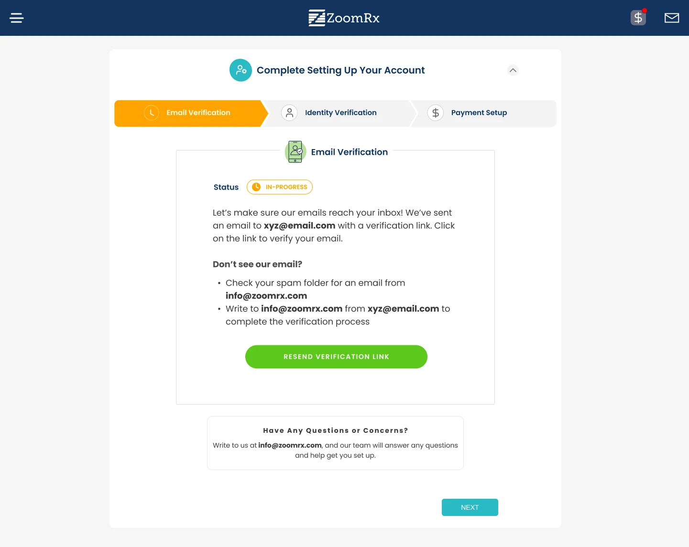
Expanded on first visit
The card sits at the top of the home screen, above the surveys, and opens already expanded. One progress header holds all three HCP steps (Email Verification, Identity Verification and Payment Setup), so a new member sees the whole job at once.
The email step says where the link was sent, what to do if it hasn't arrived (check spam, or write to info@zoomrx.com) and offers a Resend Verification Link button. That guidance used to live in follow-up emails. A “Have any questions or concerns?” box gives a support route on every step.
In the navigation bar, the $ icon with a red dot is a visual indicator that the user hasn't set up payment yet. It stays on every screen until payment setup is done.
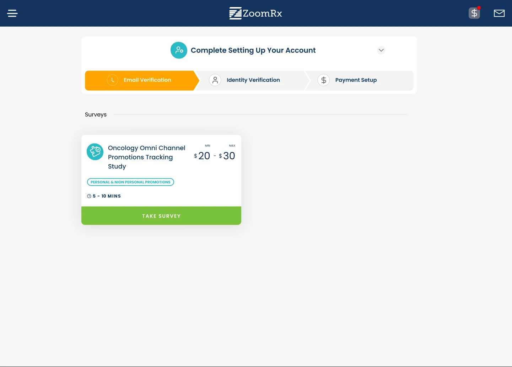
Collapsed, never hidden
The chevron folds the card down to just the three-step header. The tabs keep their colours, so progress is still readable while the user browses surveys.
The red dot on the $ icon stays too, so even with the card collapsed, the user can see that payment setup is still pending. Until everything is submitted, the card opens expanded again on every visit.
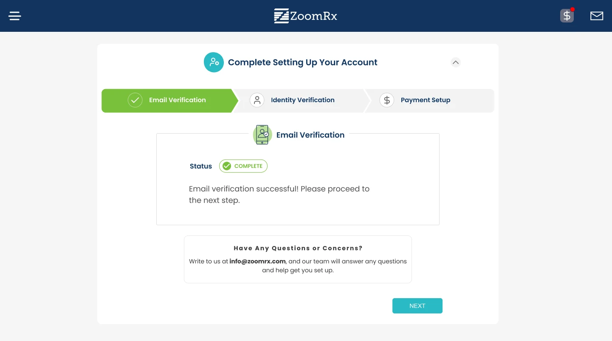
Email confirmed
Once the link is clicked, the status chip changes to Complete, the tab turns green with a check, and the copy confirms it: “Email verification successful! Please proceed to the next step.”
Before the redesign, verification ended in silence. Now every step ends with a visible confirmation and a Next button to the following step.
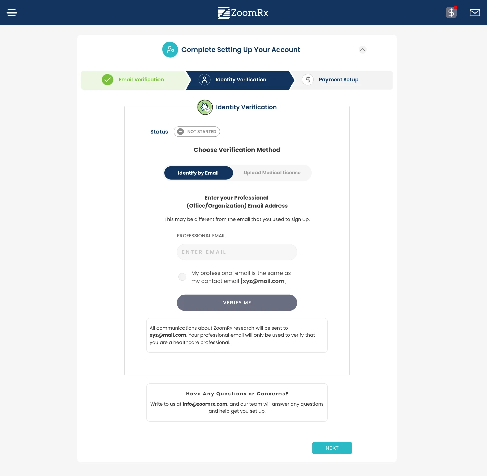
Two ways to prove you're an HCP
Identity Verification starts at Not Started. A two-option toggle lets the HCP verify with a professional (office or organisation) email or upload a medical license.
A checkbox covers the common case where the professional email is the same as the contact email. A note underneath explains that research communications still go to the contact email, answering the privacy question before it's asked.
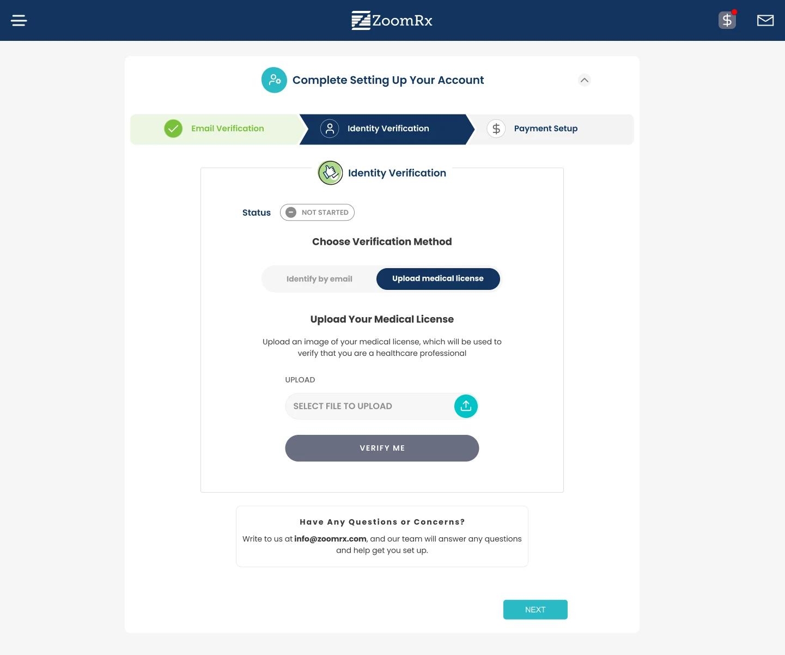
Upload a medical license
For HCPs without a professional email, the same card switches to a single upload field and a Verify Me button.
The layout, status and button stay where they were, so changing methods doesn't feel like starting a different flow.
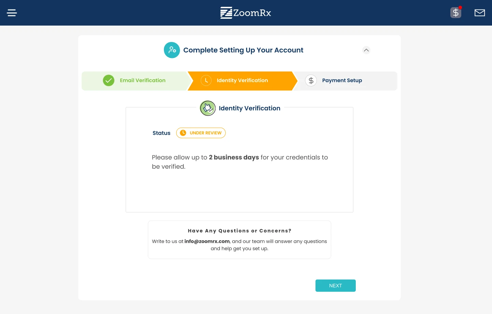
Under review, with a timeframe
After submitting, the status changes to Under Review and the tab turns orange. The copy sets expectations: “Please allow up to 2 business days for your credentials to be verified.”
Because steps can be done in any order, Next stays available. The HCP can go on to payment instead of waiting on review.
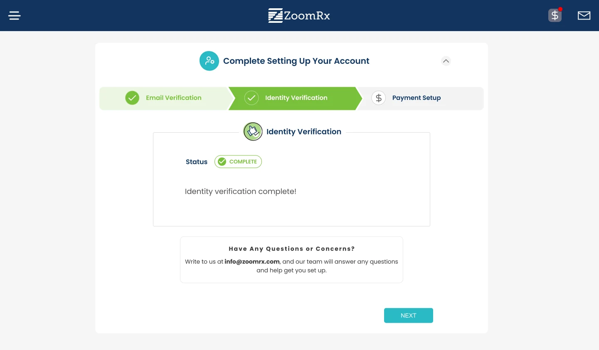
Identity approved
When the review is approved, the tab turns green and the status reads Complete. Two of the three tabs now carry a check, so it's obvious only payment is left.
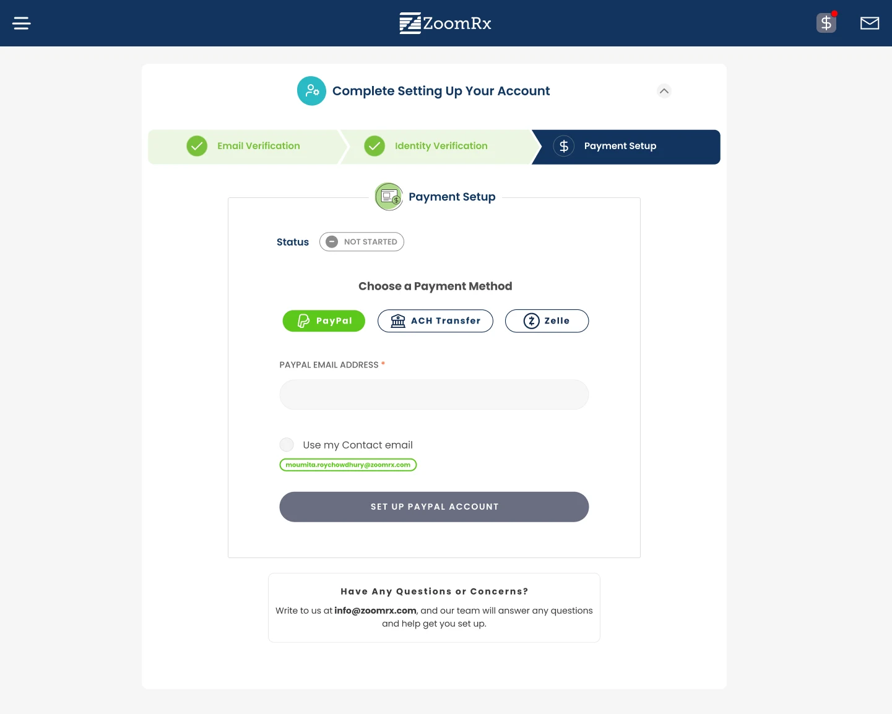
Choose how to get paid
Payment used to be the step people missed, so it now sits in the same header as verification. Three payout methods appear as pills: PayPal, ACH Transfer and Zelle.
For PayPal, a “Use my Contact email” checkbox fills in the address the HCP already gave, saving a step. The Set Up PayPal Account button only turns green once there's an email to submit.
Bank transfer details
Choosing ACH Transfer swaps in the bank form: name, account and routing numbers, bank name and address. Required fields are marked.
It's the longest form in the flow, so it keeps the same card, status chip and support box as every other step.
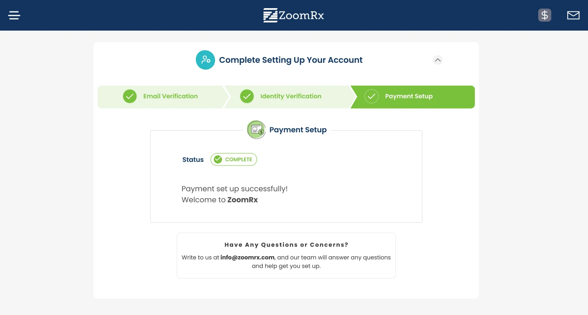
Payment set up
With payment confirmed, all three tabs are green and the card says “Payment set up successfully! Welcome to ZoomRx.”
The red dot on the $ icon is gone, because payment setup is no longer pending.
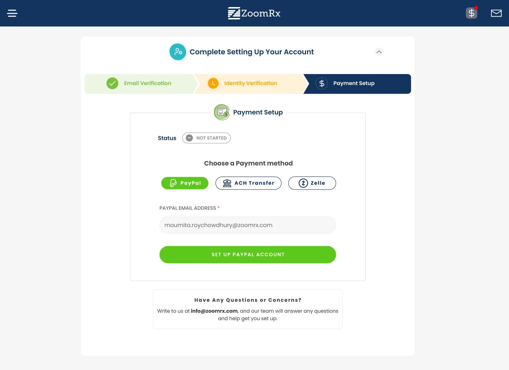
Steps in any order
Here email is done, identity is still in review (orange) and the HCP is already setting up PayPal.
No step blocks another, so nobody gets stuck waiting on identity review before they can set up how they'll be paid. The card stays visible until every step is submitted.
Account Setup Complete
When every step is done, the card collapses into a single line: “Account Setup Complete”, with a green check. This is the finish line that was missing before, backed by an in-app notification and a push notification.
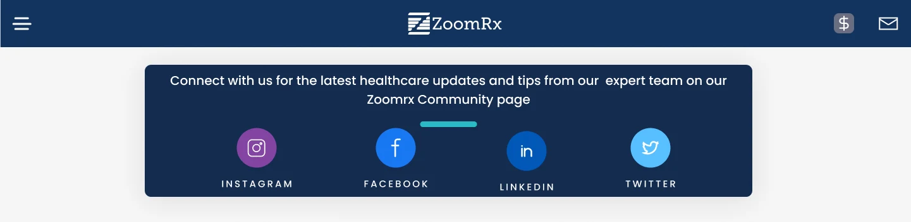
The card disappears
After that, the setup card and the red dot on the $ icon both disappear. The top of the home screen goes back to community content and surveys, with nothing left to chase.
Patient flow
Email verification → Diagnosis verification → Payment setup
User flow
- Entry screenHomeThe verification card is visible in the patient workspace, with a red dot on the $ icon until payment is set up.
- DecisionFirst-time user?
- YesOpen stateCard expanded for first-time usersSteps and current verification status are shown.
- CloseClosed stateClosed state of the dropdownThe patient can reopen the card at any time.
↩ No: closed by default; reopen at any time
- Email verificationIn progressVerification email sent to the patient.
- Patient actionOpen verification emailFollow the secure confirmation link.
- DecisionEmail confirmed?
- YesEmail verification completeNo · failureLink expired or not receivedStatus stays in progress.
↩ Resend verification email and retry
- Diagnosis verificationSelected conditionsOne or more conditions are listed in the verification card.
- DeleteDecisionDelete all selected conditions?
- YesCondition removedNo selected conditions remain.NoCondition remainsReturn to the verification card.
- RecoverNext actionAdd a conditionOpen condition search and select a diagnosis.
- Re-entryOne condition addedContinue to proof upload in Flow 2.
- Condition setupAdd a conditionSearch, select and confirm the diagnosis.
- Patient actionUpload proofAttach supporting diagnosis documentation.
- DecisionProof accepted for upload?
- YesUnder reviewProof is queued for verification.No · failureUpload needs attentionUnsupported, missing or unreadable file.
- ReviewDecisionReview outcome?
- ApprovedVerifiedCondition verification complete.
↩ Needs update: upload proof again
- ConditionPending proofProof hasn't been uploaded.ConditionUnder reviewExisting proof is being reviewed.
- DecisionWhich condition needs proof?
- PendingPatient actionUpload proof for one conditionThe under-review condition stays unchanged.
- Uploaded conditionUnder reviewBoth conditions may now show review states.
- ApprovedSuccessOne condition verifiedThe other condition's status stays independent.
- Entry screenPayment setupThe patient starts payout setup from the verification card.
- DecisionChoose payment method
- MethodBank transferEnter account and bank details.MethodPayPalEnter the PayPal account email.
- SubmitDecisionPayment details valid?
- YesPayment under reviewUp to 2 business days for the payment to reflect.
- ConfirmSuccessThe verification card and red dot disappearPayment setup is complete.
↩ No: correct details and resubmit
The UI, screen by screen
Desktop screens from the final patient design, in the order a patient meets them. The three-step header stays fixed at the top of the card, so patients always see where they are and what's left.
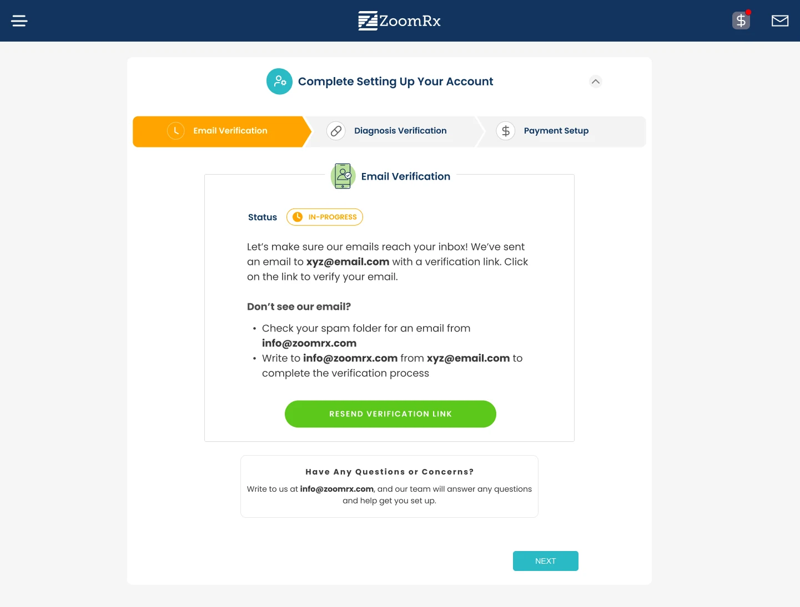
Expanded on first visit
Patients get their own three steps: Email Verification, Diagnosis Verification and Payment Setup. For first-time patients the card opens expanded at the top of the home screen, starting with email.
The email step explains where the link went, what to do if it hasn't arrived, and offers a Resend Verification Link button. In the navigation bar, the $ icon with a red dot is a visual indicator that the patient hasn't set up payment yet.
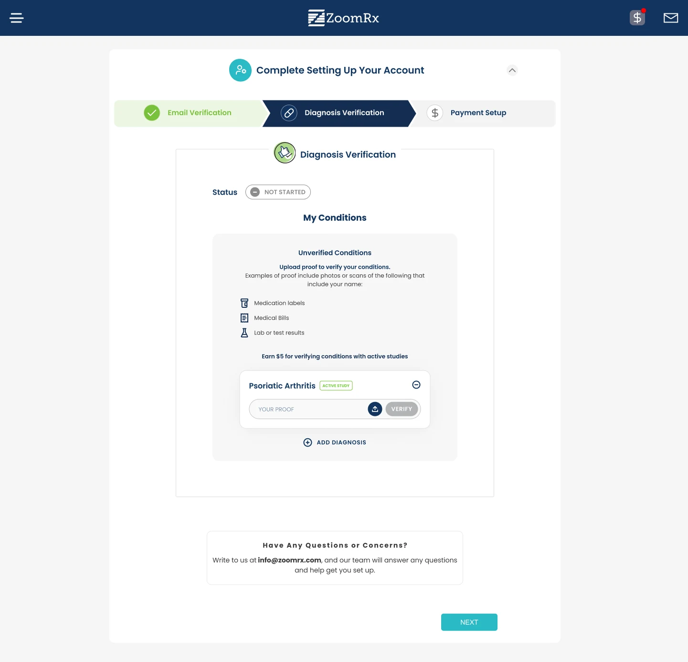
My Conditions
Instead of proving who they are, patients prove what they have. The step opens on My Conditions, where each condition the patient reported has its own card, proof field and Verify button.
Examples of accepted proof (medication labels, medical bills, lab or test results) sit right above the upload, so patients know what to send before they try. “Earn $5 for verifying conditions with active studies” and an Active Study tag on the card answer the old question of which study a proof bonus was for.
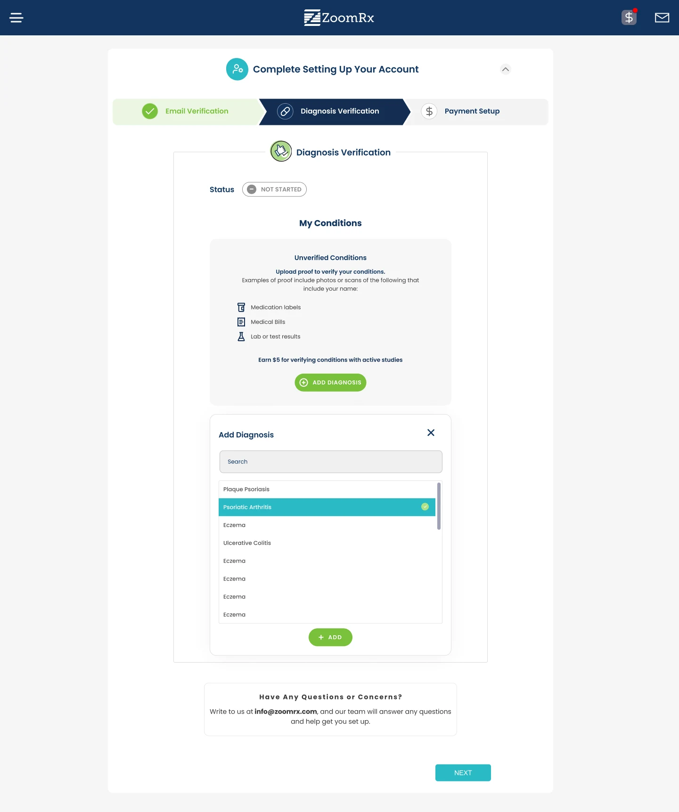
Add or remove a condition
Before the redesign, patients had no way to add or remove a diagnosis. Now Add Diagnosis opens a searchable list; the patient picks a condition and taps Add, and it appears with its own proof field.
The minus icon on a condition card removes it, so the list always matches what the patient actually has.
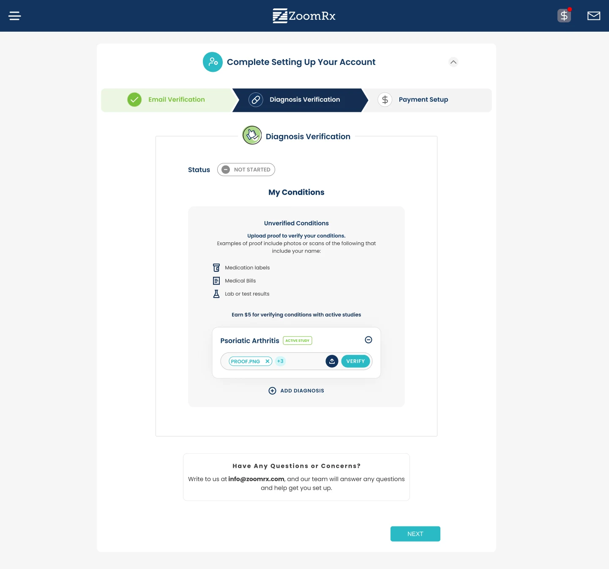
Attach proof and verify
Attached files show as chips in the proof field, with a count when there are several (“+3”), and each can be removed before submitting.
The Verify button only becomes active once there's something to send, so patients can't submit an empty upload.
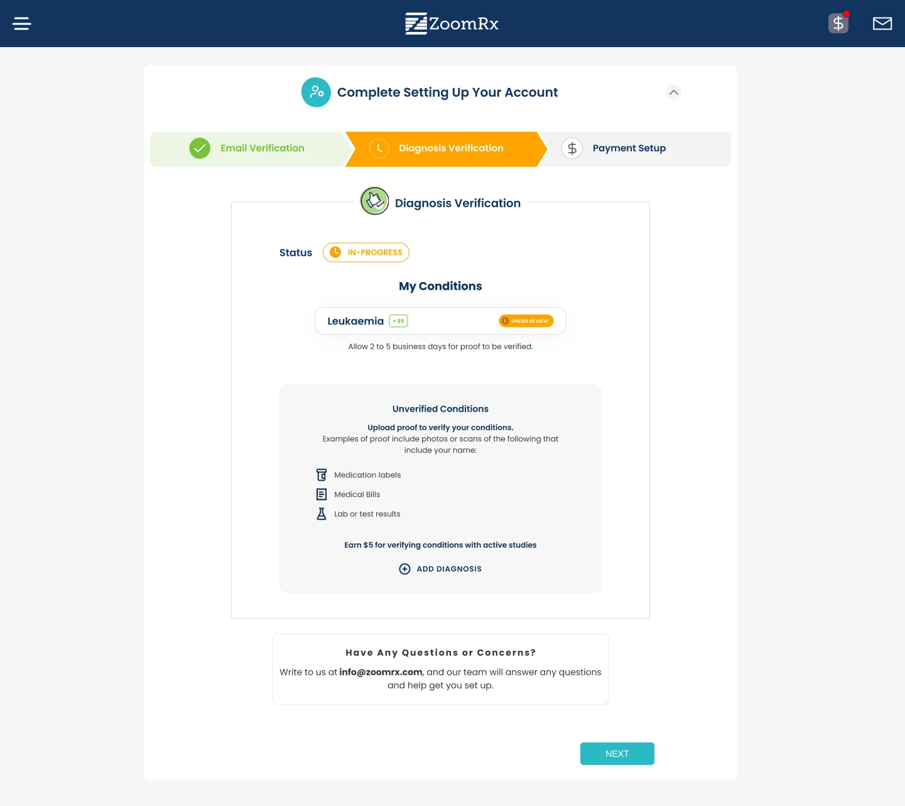
Under review, condition by condition
After submitting, the condition moves up into My Conditions with an Under Review tag and a +$5 marker, and the note “Allow 2 to 5 business days for proof to be verified.” The step status changes to In-Progress and the tab turns orange.
The Unverified Conditions area stays below, so the patient can keep adding conditions or uploading proof while one is being reviewed.
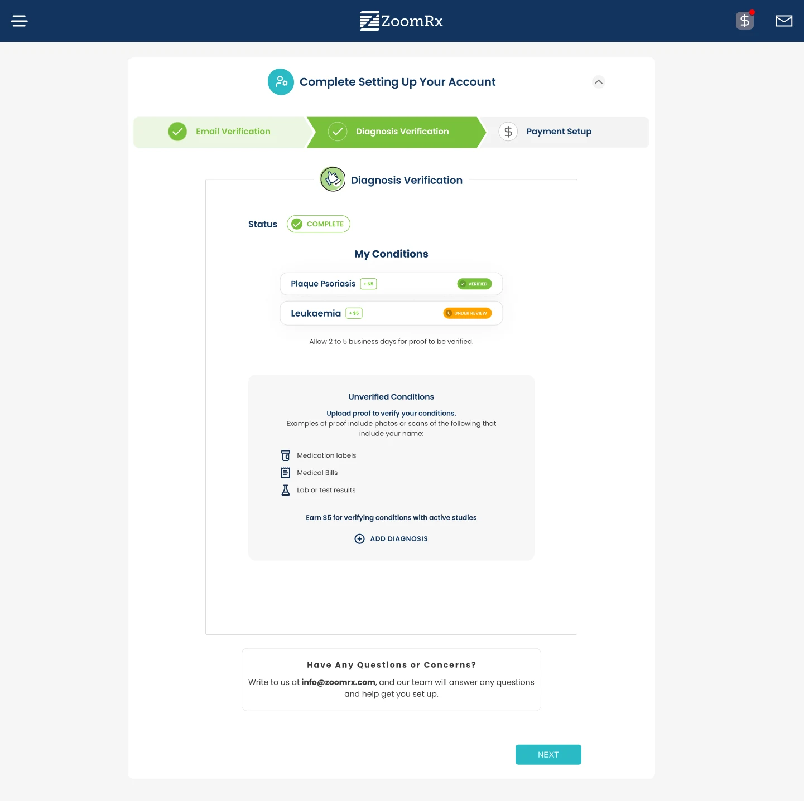
Each condition keeps its own status
Here Plaque Psoriasis is Verified and Leukaemia is still Under Review, each with its +$5 marker. Once a condition is verified, the step is marked Complete and the tab turns green.
One slow review doesn't hold up the rest of setup, and the patient can still see exactly where every other condition stands.
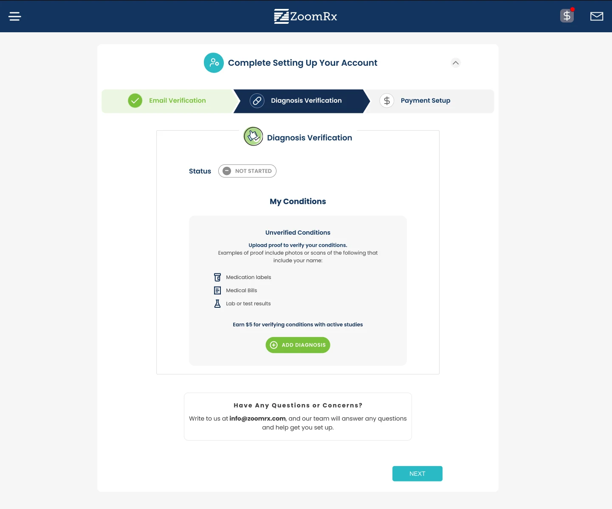
When every condition is removed
If a patient removes all their conditions, the card doesn't dead-end. The proof examples and the $5 incentive stay, and Add Diagnosis becomes a solid green button: the one obvious next action.
Choose how to get paid
Patients choose between PayPal, ACH Transfer and Zelle. For PayPal, “Use my Contact email” offers the email they already gave, shown as a chip under the checkbox, so they don't have to type it again.
Set Up PayPal Account stays grey until there's an email to submit.
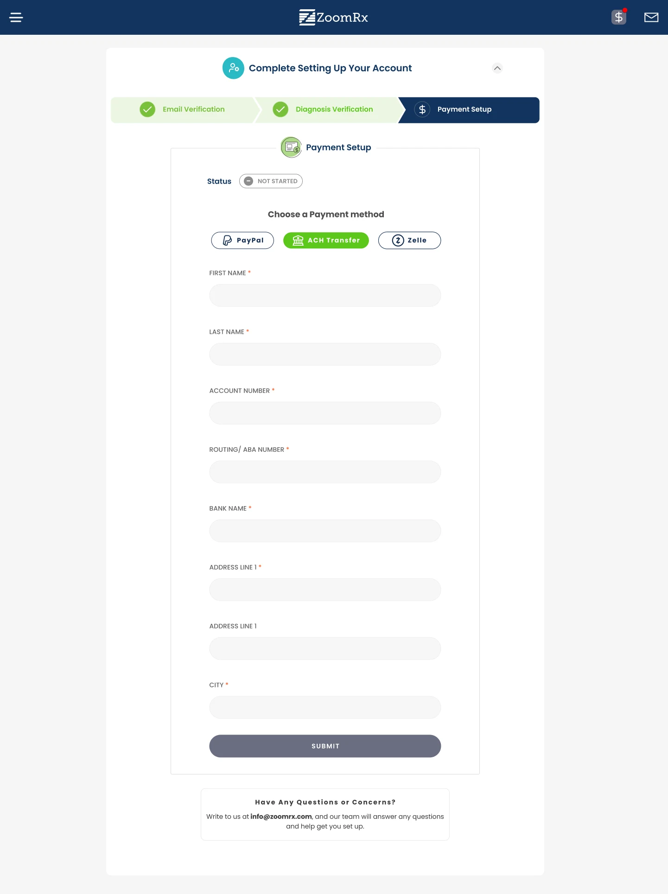
Bank transfer (ACH)
ACH Transfer swaps in the bank form: name, account and routing numbers, bank name and address, with required fields marked.
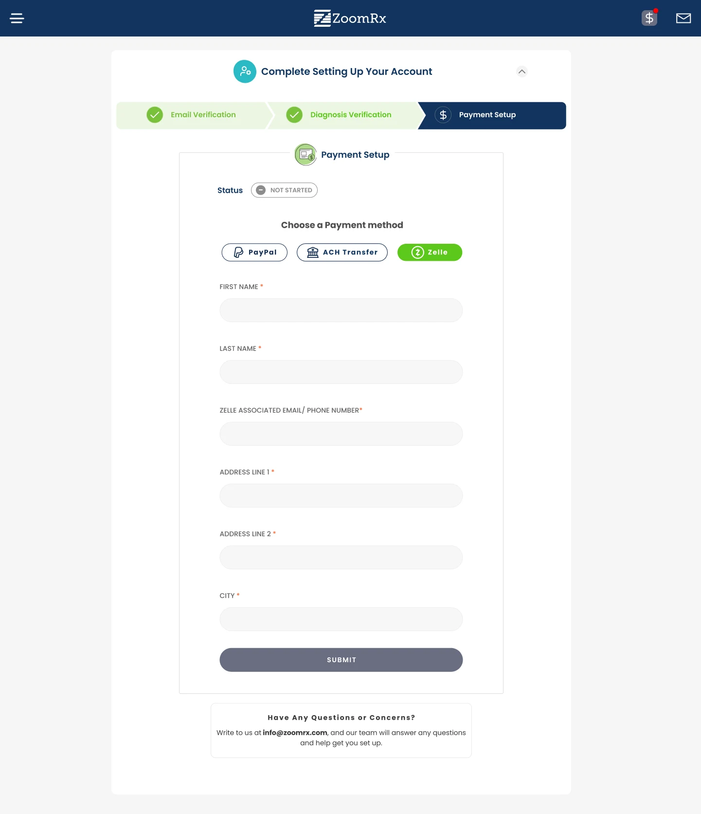
Zelle
Zelle asks for the patient's name, the email or phone number linked to their Zelle account, and their address. Each method gets only the fields it needs, inside the same card.
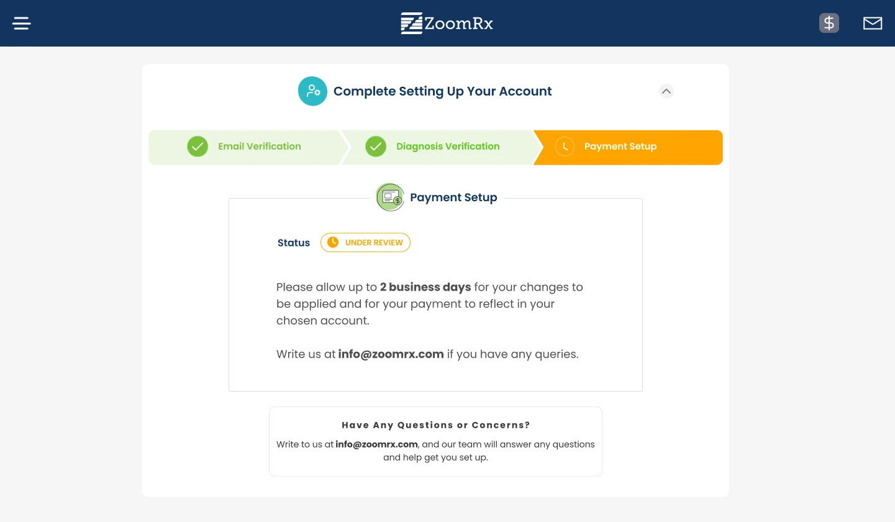
Payment under review
After submitting, the payout details go under review. The tab turns orange and the copy explains the wait: “Please allow up to 2 business days for your changes to be applied and for your payment to reflect in your chosen account.”
This answers a pain point from research: patients didn't know what happened after they submitted payment details.
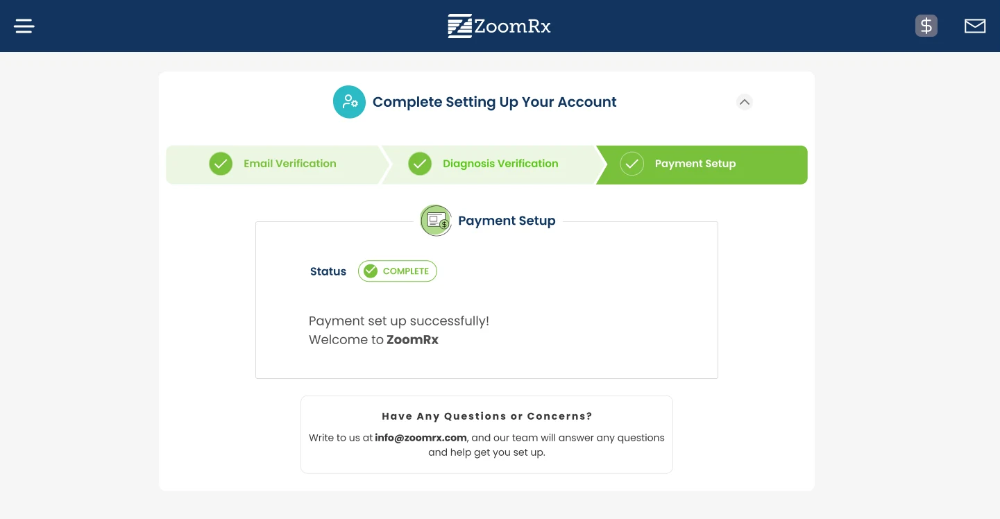
Payment set up
Once confirmed, all three tabs are green and the card says “Payment set up successfully! Welcome to ZoomRx.” The red dot on the $ icon is gone, because payment setup is no longer pending.
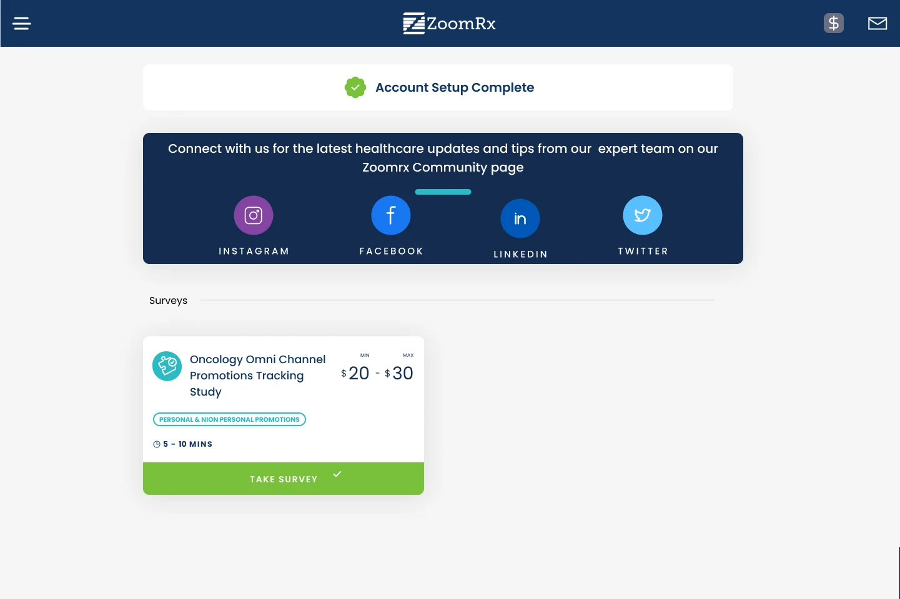
Account Setup Complete
With every step done, the card collapses into a single “Account Setup Complete” line with a green check. The patient gets a clear finish line, backed by in-app and push notifications.
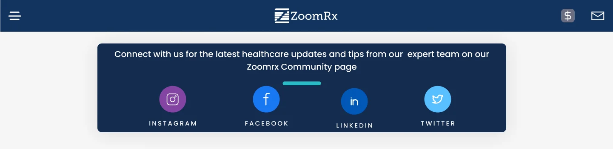
The card disappears
Then the setup card and the red dot on the $ icon disappear for good, and the home screen goes back to community content and surveys.
Before and after
| Before (early 2024) | After (Aug 2024 release) | |
|---|---|---|
| Scope | Verification only (email and identity) | Full account setup: email, identity and payment |
| Payment setup | Separate and easy to miss | A required step in the banner, plus four in-app prompts |
| Clarity of steps | “Multiple, disjointed steps” | All steps visible at once, in any order |
| Instructions | Text-heavy, email-driven, inconsistent copy | Short, consistent in-app guidance |
| Progress | No clear status per step | Four status states, orange to green |
| Banner behavior | Collapsed and easy to ignore | Expanded until complete, then collapsed |
| Confirmation | No notification when verified | “Account Setup Complete,” in-app and push notifications |
| Patient diagnosis | No add or remove; unclear bonus | Verification per indication with a $5 bonus |
Design metrics (counted from the release spec)
| Metric | Before | After |
|---|---|---|
| Setup steps shown in the banner | 2 | 3 |
| Places a user had to go to finish setup | 2 or more | 1 |
| In-app payment-setup prompts | None | 4 |
| Notifications confirming verification | 0 | 2 (in-app and push) |
| Status states shown per step | None | 4 |
| Required order of steps | Fixed | Any order |
| Patient proof incentive | None | $5 per verified indication |
Impact in 2024
Two months after launch, the FY25 planning briefs for the Media Tracking team summed up what the FY24 onboarding work had achieved and set new goals on top of it. Because TV and patient onboarding were now working, the team moved its FY25 onboarding focus to new challenges: vendor-sourced panelists and the digital extension.
| What was said | Who and when |
|---|---|
| “Significantly increasing patient conversion to verified active panelists” | Robert Faria, FY25 brief to Aravind Nagarajan, Oct 2024 |
| “Design-based solutions have played a significant role in getting new patient panelists to install and use the TV Tracking offering” | Robert Faria, FY25 brief to Shane Becerra, Oct 2024 |
| “The TV onboarding experience is generally solved” | Robert Faria, same brief, Oct 2024 |
| “The redesign did appear to improve conversion” | Robert Faria, Teams, Sep 2026 |
2024 context
| Metric (2024) | Value | Source |
|---|---|---|
| HCP signups reached | 50,000 (Aug 19, 2024, six days after release) | Community team announcement |
| Share of the panel actively participating | ~20% of 50K+ | Community FY25 Backbrief, Sep 2024 |
| New patients from the National Psoriasis Foundation partnership | 270+ (80+ psoriasis) | FY25 Media Tracker brief, Oct 2024 |
| Psoriasis pilot: survey participation | 90%+ | Same |
| Psoriasis pilot: TV Tracker participation | ~40% | Same |
| Panelist feedback (2024 sample) | 61% positive · 20% survey length · 8% question type · 3% interface | Community FY25 Backbrief |
Where onboarding stands today (2026)
The account setup banner is still in the app today, now in a redesigned form. Since 2024, the identity step has added a face scan. The Community team's 2026 panel analysis shows where new HCP members drop off now, and it points back to the same principle this project was built on: the fix is a simpler flow.
| Metric (FY26 organic HCP joiners, Jul 2026) | Value |
|---|---|
| Organic joiners | 15,882 |
| Verified | 41.5% |
| Attempted at least one survey | 38.4% |
| Median time from joining to verified | 81.7 hours (about 3.4 days) |
| Verified within 24 hours | 21.4% |
| Face-scan step conversion (added after 2024) | 8.6%, the biggest drop-off today |
| Panelist NPS (Apr 2026) | about +17 (baseline +12) |
“Flow redesign is the fix, not chasing latency.”
Community team panel analysis, Jul 2026The 2026 analysis locates today's drop-off at a newer, higher-friction step, the face scan. That is the kind of problem the 2024 banner addressed: when every step is visible, clearly explained and easy to finish, more people get through it.
What I learned
Designing for a funnel means designing for the moment someone doesn't know what to do next. Putting every step in one place, showing progress honestly and celebrating the finish did more than any extra email reminder could.
I'd also attach success metrics before launch next time. The team tracked the release qualitatively, and the Design team adopted a rule in Nov 2024 that every release needs a success metric defined before launch. A database query comparing verification and payment-setup rates for signups before and after Aug 13, 2024 is ready to run, to put exact numbers on this impact.
Sources
- Media Tracking – HCP & Patient UX Revamp – Release Plan (Tech Team SharePoint, Jul 2024)
- Panelist Verification Banner Update, Technology – Release Updates channel (Jul 19, 2024)
- Media Tracker L1 Brief – Aravind Nagarajan FY25 and Media Tracker L1 Brief – Shane Becerra FY25, written by Robert Faria (Oct 2024)
- Community L1 Backbrief FY25 (Sep 2024); L1 Backbrief – Design FY25 (Nov 2024)
- 50K HCP signups announcement, Aravind Vankayala (Aug 19, 2024)
- hcp-panel-context: Community team panel analysis master context (Mar–Jul 2026)
- Figma: Panelist experience – Onboarding account set up